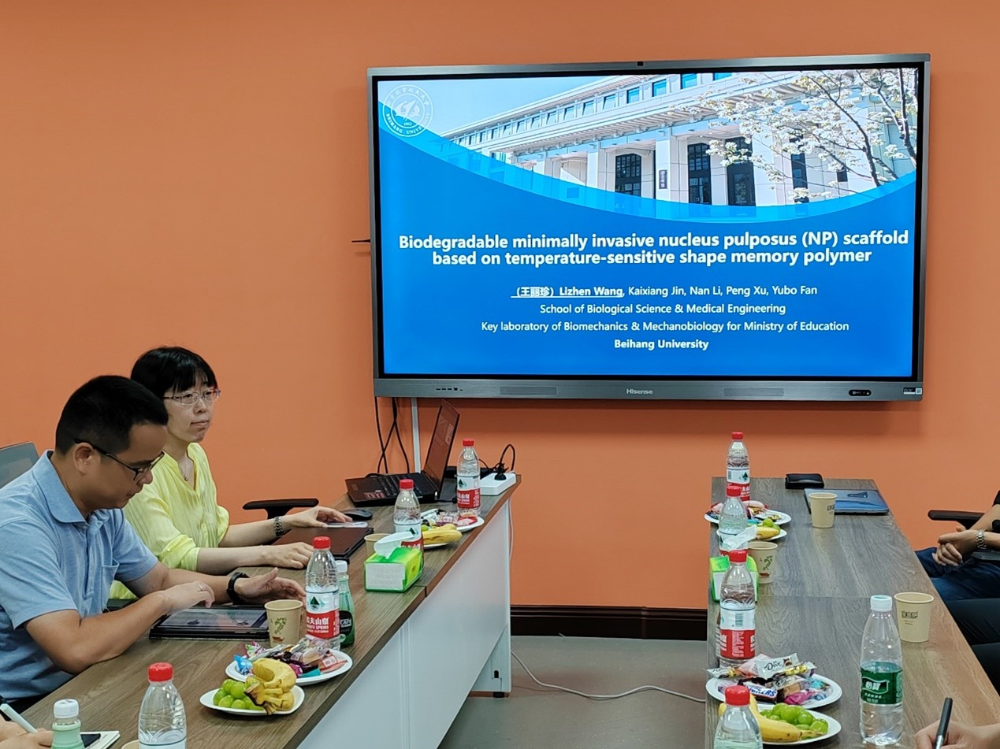
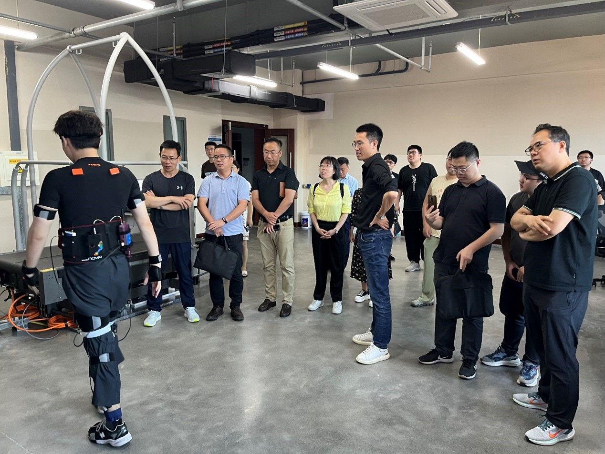

7月16日，北京航空航天大学生物与医学工程学院教授、生物力学与力生物学教育部重点实验室副主任王丽珍来访大连理工大学，大连理工大学医学部书记覃开蓉教授、附属中心医院骨科主任王宏教授接待来访。大连理工大学机械学院、工程力学系、电信学部、体育与健康学部、医学部及大连医科大学、大连市附属第三医院相关老师参加了会议，会议由工程力学系吕永涛副教授主持。
医学部覃开蓉教授首先代表大连理工大学医工交叉研究团队对王丽珍教授的来访表示热烈欢迎，并介绍了医学部的建设情况、参加会议的医工交叉各研究团队的主要研究方向等。他希望通过此次交流，能够学习和借鉴北京航空航天大学生物与医学工程学院在医工交叉建设和发展方面的成功经验，探索与北京航空航天大学的跨区域科研合作及人才培养新模式。
图1：大连理工大学医学部覃开蓉教授致欢迎词
随后，王丽珍教授做了题为“Biodegradable minimally invasive nucleus pulposus (NP) scaffold based on temperature-sensitive shape memory polymer”的学术报告（相关论文Nature子刊《Nature Communications》，论文全文见https://www.nature.com/articles/s41467-023-39604-0），王教授从材料设计、力学分析、生物学测试、动物实验等多方面详细阐述了新开发的智能化、微创化人工再生髓核支架，充分展示了北航在多学科深度交叉融合方面的成功。附属中心医院骨科主任王宏教授评价说，王教授的工作为脊柱髓核手术的微创化及再生化带来了希望，开发的产品一旦临床应用，将革新该领域的手术，为病人带来福音。大连医科大学附属第一医院脊柱外科李忠海主任也高度评价王教授开发的智能化新型脊柱髓核支架，并期待后期的进一步研发和临床应用。随后，双方就多学科如何深度交叉如何、如何做出高水平、有临床价值的成果展开了深入交流。大连理工大学、大连医科大学及大连市附属第三医院的参会代表也一一介绍了自己的研究方向及研究内容，为双方以后在医工交叉各领域的科研合作奠定了基础。
图2：北京航空航天大学王丽珍教授做学术报告
图3：大连理工大学龙陵产品赠予仪式
研讨会的最后，王丽珍教授来到大连理工大学智能装备与医疗器械实验室（负责人：舒利明）及运动健康促进中心（负责人：刘海滨）进行了参观，充分肯定了大连理工大学拥有的很好的医工交叉研究平台和设备，并期望在相关方向开展科研合作。本次研讨会在深度交流、融洽的气氛下完成，为双方未来在医工交叉领域的科研合作、人才培养等方面的合作提供了更多的思路和方向，增进了兄弟院校之间的友谊。
图4：参观机械工程学院智能装备与医疗器械实验室
图5：参观体育与健康学部运动健康促进中心